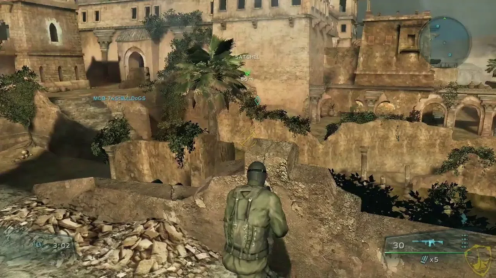

SOCOM:Confrontation was the first entry for the series on the PS3.
At the time of its release, its popularity took Sony by surprise. It not only took down Sony's servers for the game but for their entire online store front for a couple of days.

I was responsible for the Kasbah map, one of the most popular maps on release. I focused on designing and balancing the level across all game modes.

Key Contributions
- Designed Kasbah - one of the most popular maps on release
- Balanced map flow across all game modes
- Created level design documentation
- Contributed to launch that overwhelmed Sony's servers
- Playtested and iterated on competitive multiplayer balance
Skills Applied
Level Design
Multiplayer Design
Map Balancing
Documentation
Playtesting